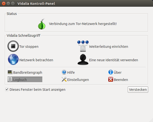

Vidalia
Archivierte Anleitung
Dieser Artikel wurde archiviert, da er - oder Teile daraus - nur noch unter einer älteren Ubuntu-Version nutzbar ist. Diese Anleitung wird vom Wiki-Team weder auf Richtigkeit überprüft noch anderweitig gepflegt. Zusätzlich wurde der Artikel für weitere Änderungen gesperrt.
Achtung!
Das Tor Browser Bundle (TBB) ab Version 3.5 beinhaltet Vidalia nicht mehr, da dieses nicht mehr benötigt wird. An die Stelle von Vidalia ist die Anwendung "Tor Launcher" getreten, welche im Tor Browser Bundle bereits enthalten ist und nicht installiert werden muss. Es wird dringend empfohlen, TBB in Version 3.5x oder neuer zu installieren!
Laut Wikipedia wurde die Entwicklung von Vidalia zum 9. Februar 2015 eingestellt und wurde auch vor diesem Datum nicht mehr richtig mit Aktualisierungen versehen. Vidalia kann daher laut den Entwicklern nicht mehr als Lösung empfohlen werden! Quelle 
Zum Verständnis dieses Artikels sind folgende Seiten hilfreich:
Vidalia  ist eine plattformübergreifend verfügbare graphische Benutzeroberfläche zur Steuerung des Tor-Clients auf Basis der Grafikbibliothek Qt. Sie ermöglicht das Starten und Beenden des Tor-Clients. Vidalia unterstützt den Nutzer auch bei der Einrichtung eines Tor-Netzknotens.
ist eine plattformübergreifend verfügbare graphische Benutzeroberfläche zur Steuerung des Tor-Clients auf Basis der Grafikbibliothek Qt. Sie ermöglicht das Starten und Beenden des Tor-Clients. Vidalia unterstützt den Nutzer auch bei der Einrichtung eines Tor-Netzknotens.
Vidalia kann auch eine Tor-Netzwerk-Karte anzeigen, auf der man die geographische Lage der Tor-Server und den Weg des eigenen Tor-Verkehrs sehen kann.
Installation¶
Um Vidalia aus den offiziellen Paketquellen zu installieren, wird folgendes Paket benötigt [1]:
vidalia (universe)
 mit apturl
mit apturl
Paketliste zum Kopieren:
sudo apt-get install vidalia
sudo aptitude install vidalia
Tor Browser Bundle¶
In früheren Versionen (älter als 3.5.x) des Tor Browser Bundles war Vidalia bereits enthalten und brauchte nicht eigens installiert zu werden.
Manuell kompilieren¶
Die andere Möglichkeit ist, Vidalia von Hand zu kompilieren. Zuerst sollte sichergestellt werden, dass die folgenden Pakete neben denen zur Kompilierung [2] erforderlichen aus den Paketquellen installiert sind:
qt4-dev-tools (universe)
qt4-designer
libqt4-dev
cmake
build-essential
checkinstall (universe)
mit apturl
Paketliste zum Kopieren:
sudo apt-get install qt4-dev-tools qt4-designer libqt4-dev cmake build-essential checkinstall
sudo aptitude install qt4-dev-tools qt4-designer libqt4-dev cmake build-essential checkinstall
Außerdem sollte Tor bereits installiert sein. Eine ausführliche Anleitung dazu findet man im Artikel Tor/Installation.
Nun lädt man sich die aktuelle Version des Vidalia-only Source Packages herunter und entpackt es. Danach wechselt man im Terminal [3] in den entpackten Vidalia-Ordner und kompiliert es mit:
cmake . && make
Danach kann es mit
sudo checkinstall
Benutzung¶
Per Doppelklick auf das Tray-Icon öffnet sich das Kontrollpanel (unter Unity ist dieses nicht sichtbar; siehe hier). Per  -Klick auf das Tray-Icon erhält man die gleichen Punkte wie im Kontrollpanel, nur in einer Drop-Down-Box.
-Klick auf das Tray-Icon erhält man die gleichen Punkte wie im Kontrollpanel, nur in einer Drop-Down-Box.
Tor-Status¶
Der Tor-Status zeigt den momentanen Status von Tor. Entweder eine durchgestrichene Zwiebel, was bedeutet, dass Tor nicht läuft. Eine gelbe bedeutet, dass Tor gerade gestartet wird. Eine grüne Zwiebel zeigt an, dass Tor läuft und eine rote Zwiebel zeigt an, dass Tor gerade gestoppt wird.
Weiterleitung einrichten¶
 Zu dieser Option gelangt man in die Vidalia-Einstellungen über "Verteiler" wo man durch Anklicken von "Leite Verkehr für das Tor-Netzwerk weiter" den eigenen Rechner zu einem Tor-Node machen und so das Tor-Netzwerk unterstützen kann. Vorgenommene Einstellungen werden erst durch das Klicken auf "Speichern" übernommen. Vergleiche dazu auch den Artikel Tor/Server.
Als erstes sollte man unter "Spitzname" dem Node einen Namen geben und eine "Kontaktinformation" (E-Mail-Adresse) angeben. Will man einen anderen Port als 9001 benutzen, an dem der Server lauscht kann, man dies beim "Verteiler-Port" angeben.
Die Option "Das Tor-Verteiler-Verzeichnis spiegeln" ist optional. Wenn man dies aktiviert, können Tor-Clienten über den eigenen Node die Information beziehen, was es sonst noch für Tor-Nodes gibt. Der Raster "Bandbreitenbegrenzung" spricht wohl für sich.
Über "Exit-Regeln" kann man einstellen, was für Dienste man über den eigenen Node erlauben möchte und an welchem Port sie laufen. Wenn man hier in allen Kästchen einen Haken macht, besitzt man einen Standard-Exit-Node. Möchte man, dass ein gewisser Dienst nicht über den eigenen Exit-Node erreicht werden kann, entfernt man einfach den entsprechenden Haken. Entfernt man alle Haken, betreibt man einen Entry-Node.
Um Rückmeldung über Erfolg oder Misserfolg dieser Konfiguration zu bekommen, muss man das Logbuch lesen.
Um den Server herunterzufahren, kann man mittels Rechtsklick auf das Vidalia-Tray-Icon "Tor stoppen" wählen. Es wird gefragt, ob der Server langsam oder schnell heruntergefahren werden soll. Siehe dazu auch Tor-Server herunterfahren.
Eine neue Identität verwenden¶
Dadurch wechselt man zu einem neuen Tor-Exit-Node, wodurch man über eine neue IP-Adresse surft.
Netzwerk betrachten¶
Hier sieht man eine Netzwerkkarte mit allen verfügbaren Nodes, deren Online-Status und in welchem Land sie sich befinden. Außerdem eine Liste mit den offenen Verbindungen und durch welche Nodes sie gehen, welche man sich auf der Weltkarte auch graphisch anzeigen lassen kann.
Bandbreitengraph¶
Der Bandbreiten-Graph zeigt einem an, wieviel Datentransfer (Traffic) durch den Tor-Dienst ein- und ausgeht.
Logbuch¶
Zeigt erweiterte Informationen über den momentanen Status von Tor an. Bei Problemen mit Tor ist dies der Ort, um nach aussagekräftigen Fehlermeldungen zu suchen. Es gibt die Auswahlmöglichkeiten "Einfach" und "Fortgeschritten". Besonders beachtet werden sollten die Warnungen. Ausführlicher sind die Meldungen in der Log-Datei von Tor. Wurde Tor manuell installiert, finden sich die Logdateien unter /var/log/tor/.
Logbuch-Meldungen¶
"Tor Software läuft - Sie verwenden aktuell Version "0.2.2.35 (git-73ff13ab3cc9570d)" der Tor-Software".
Gut, Vidalia hat den Tor-Dienst gefunden"Verbinde mit dem Tor-Netzwerk - Es wurde eine Verbindung zum Tor-Netzwerk erfolgreich hergestellt. Sie können jetzt Ihre Programme konfigurieren um das Internet anonym zu nützen."
Gut, surfen über Tor ist jetzt möglich"[Warnung] Couldn't rename configuration file "/etc/tor/torrc" to "/etc/tor/torrc.orig.1": Permission denied"
Die in Vidalia vorgenommenen Änderungen konnten nicht in der Tor-Konfigurationsdatei /etc/tor/torrc gespeichert werden. Siehe Zugriffsrechte auf Tor-Konfiguration."[Warnung] ControlPort is open, but no authentication method has been configured. This means that any program on your computer can reconfigure your Tor. That's bad! You should upgrade your Tor controller as soon as possible."
Die Authentisierung von Vidalia bei Tor wird unter "Einstellungen -> Fortgeschritten -> Tor Control" konfiguriert."[Warnung] Your server (80.129.53.32:9001) has not managed to confirm that its ORPort is reachable. Please check your firewalls, ports, address, /etc/hosts file, etc."
Sehr schlecht. Ein Tor-Server sollte eröffnet werden, jedoch ist der ORPort für eingehende Verbindungen nicht von außerhalb erreichbar. Der Server kann so nicht in Betrieb gehen. Siehe Problembehebung für Tor-Server."[notice] Your DNS provider has given "80.156.86.78" as an answer for 9 different invalid addresses. Apparently they are hijacking DNS failures. I'll try to correct for this by treating future occurrences of "80.156.86.78" as 'not found'."
Harmlos. Manche DNS-Provider liefern bei Aufruf von nicht existierenden Webadressen als Antwort ihre eigene Werbeseite statt "404 - not found", was korrekt wäre. Tor löst das Problem, indem es bei Aufruf der Provider-Werbeseite seinerseits "404 - not found" meldet.
Hilfe¶
Öffnet eine deutsche Hilfe, die die Benutzung von Vidalia und Tor erklärt.
Über¶
Zeigt die momentan verwendete Version von Tor, Vidalia und Qt an.
Einstellungen¶
Hier erreicht man das Einstellungsmenü von Vidalia. Eigentlich muss man hier nichts verändern. Die Standardeinstellungen sind in der Regel in Ordnung. Wenn man Einstellungen verändert, muss man mit "OK" bestätigen, damit sie übernommen werden.
Man kann das "Aussehen" festlegen oder etwa unter "Fortgeschritten" den von Tor benutzen Port oder die Ordner für die Konfigurationsdateien bestimmen. Muss man über einen anderen Proxy ins Internet gehen oder erlaubt die Firewall nur bestimmte Ports, kann man diese unter "Netzwerk" festlegen. Unter "Verteiler" kann man den eigenen Tor-Dienst selbst als Node einrichten.
Bridge Relays¶
In einigen Ländern (z.B. China) ist Tor nicht ohne Weiteres zu erreichen. Sämtliche Seiten, die mit Tor zu tun haben, werden geblockt. Das gilt auch für die Einwahlknoten. So ist es erforderlich, sogenannte "Bridges" einzurichten, feste Einwahlknoten, und diese hin und wieder zu aktualisieren.
Hierzu fordert man Bridges unter folgender E-Mail-Adresse an: bridges@torproject.org. Diese Adresse funktioniert von China nicht mit allen Mailprovidern, mit Google-Mail und aktiviertem HTTPS wurde es erfolgreich getestet. Es werden drei Adressen zugesandt, die man jetzt Vidalia mitteilt:
Unter Vidalia "Einstellungen -> Netzwerk" muss ein Häkchen in den Kasten "Mein Provider blockiert Verbindungen zum Tor-Netzwerk" gesetzt werden.
Ein Fenster öffnet sich, "Tor-Brücken-Einstellungen", in das man dann die Bridges in die Zeile "Eine Brücke hinzufügen" wie folgt einträgt:
bridge xxx.xxx.xxx.xxx:[port]
und mit Druck auf + hinzufügt. Leider halten die Brücken nicht ewig, ab und zu muss man neue hinzufügen.
Die torrc verändern, wenn man Vidalia nutzt¶
Wenn Tor über Vidalia gestartet wird, benutzt es nicht die Standard-Konfigurationsdatei /etc/tor/torrc von Tor, sondern legt eine eigene als ~/.vidalia/torrc im Homeverzeichnis an. Möchte man individuelle Einstellungen für Tor festlegen, müssen diese also in der von Vidalia angelegten gemacht werden.
Problembehebung¶
Vidalia will ein Passwort¶
Bei diesem Fehler ist irgendetwas beim Sperren einer Vidalia-Einstellung schief gelaufen. Meist muss man nur den Ordner ~/.vidalia/ löschen, um das Problem zu beheben. In anderen Konstellationen kann es helfen, Tor in einem Terminalfenster mit dem folgenden Befehl zu beenden:
sudo pkill -x tor
Zugriffsrechte auf Tor-Konfiguration¶
Soll mit Vidalia ein manuell installiertes Tor kontrolliert werden (also außerhalb des Tor-Browser-Bundles), müssen dem Programm Zugriffsrechte auf die Konfigurationsdateien in /etc/tor gegeben werden. Dies geht mit folgendem Befehl:
sudo chown -R debian-tor.debian-tor /etc/tor
Tor läuft bereits oder wurde unerwartet beendet¶
Vidalia kann nicht die Kontrolle über einen bereits laufenden Tor-Dienst übernehmen, wenn dieser keinen Kontrollport geöffnet hat. Man hat zwei Möglichkeiten, dieses Problem zu beheben.
Bei der ersten Methode sollte man den Tor-Dienst einmalig aus den Runlevels (=Autostart) löschen, damit Tor nicht automatisch beim Booten gestartet wird, sondern erst mit dem Start von Vidalia:
sudo update-rc.d -f tor remove
Dies wirkt sich aber erst ab dem nächsten Neustart des Systems aus. Bevor man Vidalia also starten kann, muss man entweder neu booten oder Tor von Hand beenden:
sudo pkill -x tor
Die zweite Methode besteht darin, den Kontrollport in Tor zu aktivieren. Damit diese Einstellung wirksam wird, muss man Tor danach neu starten.
Vidalia startet nicht¶
Die Grafische oberfläche von Vidalia startet nicht. Wenn Vidalia auf der Konsole gestartet wird erscheint eine ausgabe wie
1 2 3 4 5 6 7 8 9 10 11 12 | vidalia (process:10052): GConf-WARNING **: Client failed to connect to the D-BUS daemon: An AppArmor policy prevents this sender from sending this message to this recipient, 0 matched rules; type="method_call", sender="(null)" (inactive) interface="org.freedesktop.DBus" member="Hello" error name="(unset)" requested_reply="0" destination="org.freedesktop.DBus" (bus) (<unknown>:10052): GConf-WARNING **: Client failed to connect to the D-BUS daemon: An AppArmor policy prevents this sender from sending this message to this recipient, 0 matched rules; type="method_call", sender="(null)" (inactive) interface="org.freedesktop.DBus" member="Hello" error name="(unset)" requested_reply="0" destination="org.freedesktop.DBus" (bus) (<unknown>:10052): IBUS-WARNING **: Unable to load /var/lib/dbus/machine-id: Failed to open file '/var/lib/dbus/machine-id': Permission denied (<unknown>:10052): GVFS-RemoteVolumeMonitor-WARNING **: cannot open directory /usr/share/gvfs/remote-volume-monitors: Error opening directory '/usr/share/gvfs/remote-volume-monitors': Permission denied ^C |
Dann kann mittels
sudo ln -s /etc/apparmor.d/usr.bin.vidalia /etc/apparmor.d/disable/
sudo apparmor_parser -R /etc/apparmor.d/usr.bin.vidalia
apparmor für Vidalia deaktiviert werden. Anschließend sollte Vidalia korrekt funktionieren.
 Übersichtsartikel
Übersichtsartikel- Erstellt mit Inyoka
-
 2004 – 2017 ubuntuusers.de • Einige Rechte vorbehalten
2004 – 2017 ubuntuusers.de • Einige Rechte vorbehalten
Lizenz • Kontakt • Datenschutz • Impressum • Serverstatus -
Serverhousing gespendet von